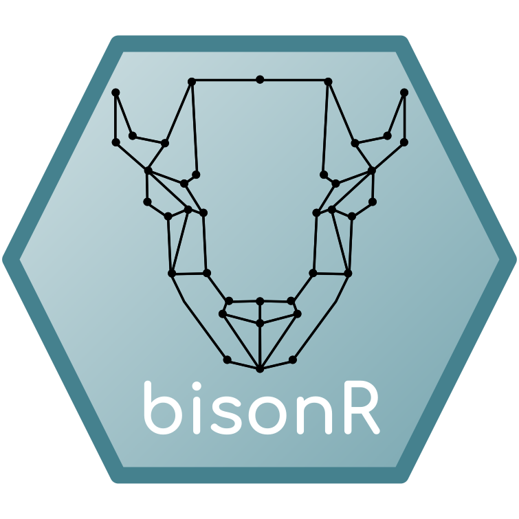

This package is still in continuous development and has not yet been fully tested. Please let us know if you encounter any unexpected behaviour.
bisonR is an R package implementing the BISoN framework for conducting Bayesian analysis of social networks. BISoN estimates uncertainty over edge weights in social networks from empirical data (such as observations) and builds networks with uncertainty. The networks can then be visualised with uncertainty and analysed with a fully Bayesian methodology.
Quick Start
To get started with the package use the code below:
library(bisonR)
sim_data <- simulate_bison_model("binary", aggregated = TRUE)
df <- sim_data$df_sim
priors <- get_default_priors("binary")
fit_edge <- bison_model(
(event | duration) ~ dyad(node_1_id, node_2_id),
data=df,
model_type="binary",
priors=priors
)
summary(fit_edge)This will fit a basic edge model model to simulated data and generate an output like this below:
=== Fitted BISoN edge model ===
Data type: binary
Formula: (event | duration) ~ dyad(node_1_id, node_2_id)
Number of nodes: 10
Number of dyads: 45
Directed: FALSE
=== Edge list summary ===
median 5% 95%
1 <-> 2 0.156 0.014 0.530
1 <-> 3 0.702 0.219 0.973
2 <-> 3 0.793 0.356 0.982
...For a more detailed example check out the Getting Started page here: https://jhart96.github.io/bisonR/articles/getting_started.html.
Installation
Installing CmdStanR
The bisonR package is written in R, but uses the Stan programming language to fit Bayesian models. Stan is a separate program, and interfaces with bisonR using an R package called cmdstanR. Stan and cmdstanR are installed in a different way to standard R packages, so require a specific series of installation steps.
On Windows, before proceeding you may need to install the version of Rtools appropriate for your version of R. Rtools can be found here: https://cran.r-project.org/bin/windows/Rtools/.
The full instructions to install cmdstanR can be found at https://mc-stan.org/cmdstanr/. We’ve found that the following steps often work, but depending on your operating system and version of R, the process may be more involved.
install.packages("cmdstanr", repos = c("https://mc-stan.org/r-packages/", getOption("repos")))
library(cmdstanr)
check_cmdstan_toolchain(fix = TRUE, quiet = TRUE)
install_cmdstan() # On networked PCs, specify a local directory here with the argument dir=path_to_local_directory